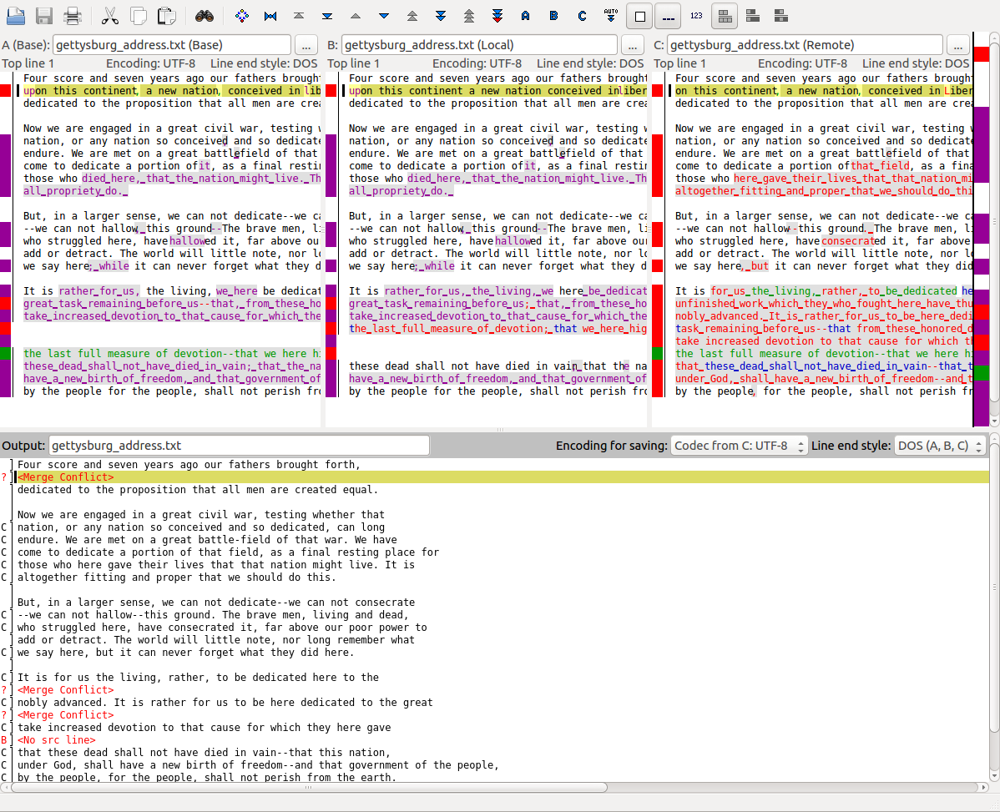
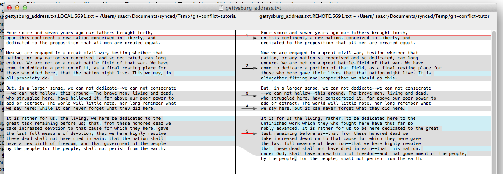
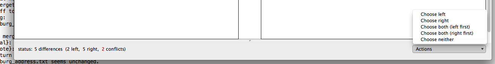
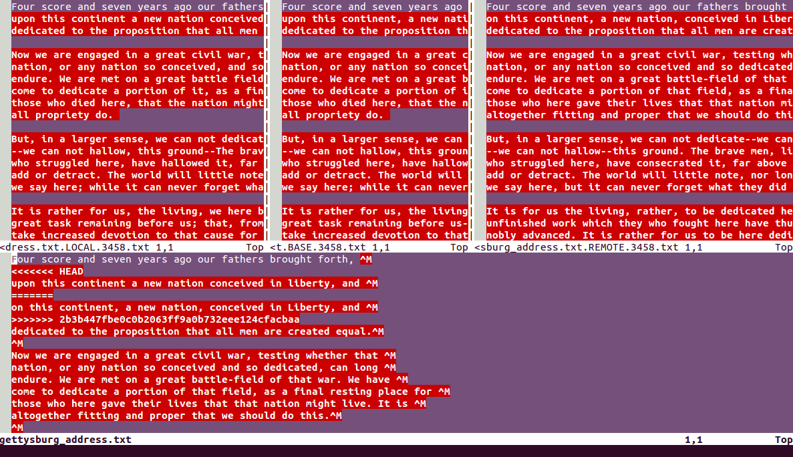

This tutorial helps you to learn how to handle a merge conflict in git. It's smart to practice conflict resolution ahead of time, rather than when you are frazzled by a conflict in a real project.
When using version control, several people start with the same version of the codebase, make edits to it independently, and then push those edits to the central repository. The version control system "merges" these several edits to make a single, new, consistent codebase.
Recall that in the commit log, commits form a directed acyclic graph. Most commits have exactly one parent commit, which immediately precedes it. However, a "merge" commit (the result of a merge) has two parents. Here's an example, with more recent commits at the top just as Git prints them:
The version control system tries to automatically merge different developers' work. It usually succeeds.
The rest of this document tells you how to deal with merge conflicts. A conflict is always the result of a failed automated merge.
This document only addresses two-way merges. Some version control systems, including Git, allow N-way merges that attempt to merge more than two commits. This increases the complexity of the merge, but the strategy for resolving conflicts is the same.
Suppose that you are Abraham Lincoln's private secretary, and both of you have made changes to his first draft of the Gettysburg Address. He has made major content changes, and you've made some minor grammar changes.
To set up your version control system for this scenario, run:
git clone https://github.com/mernst/git-conflict-tutorial.git cd git-conflict-tutorial ./conflict.sh cd tutorial-repos/local
This creates a new clone tutorial-repos/local/ where you have been making your edits. (Abraham Lincoln has been editing in his own clone of the repository, and unfortunately those edits conflict with yours.)
Attempt to incorporate Abraham Lincoln's changes into your clone:
git pull
When you run pull in your repository to get Lincoln's changes, Git tries to automatically merge his version into yours. In this case it is unable to do so, and it outputs:
Auto-merging gettysburg_address.txt
CONFLICT (content): Merge conflict in gettysburg_address.txt
Automatic merge failed; fix conflicts and then commit the result.
To see the status of all files in the repository (including which conflicts you've already resolved and which ones remain unresolved), run
git pull
This repository has a conflict in only one file; Git outputs:
...
You have unmerged paths.
(fix conflicts and run "git commit")
(use "git merge --abort" to abort the merge)
Unmerged paths:
(use "git add <file>..." to mark resolution)
both modified: gettysburg_address.txt
...
Examine file gettysburg_address.txt, in an editor or by running
cat gettysburg_address.txt. It contains conflict markers
(<<<<<<<, ||||||||||,
==========, >>>>>>>>>>)
that show the locations of conflicts.
The below shows line numbers for convenience; they are not in the actual file.
1: Four score and seven years ago our fathers brought forth,
<<<<<<< HEAD
2a: upon this continent a new nation conceived in liberty, and
||||||| merged common ancestors
2b: upon this continent, a new nation, conceived in liberty, and
=======
2c: on this continent, a new nation, conceived in Liberty, and
>>>>>>> 03bd6c346eeb208332e7176453d015174f5bf654
3: dedicated to the proposition that all men are created equal.
...
(If your gettysburg_address.txt file contains only
<<<<<<<, ==========,
and >>>>>>>>>> conflict markers, but
no |||||||||| conflict markers, then run git config --global
merge.conflictStyle zdiff3 (on every computer where you use git) and
start the tutorial over, with a new clone of this repository. The zdiff3
conflict stuly shows not just the differences between the two parent commits of
the conflict, but also the common ancestor of the two parents. Knowing the
common ancestor is often essential to resolving the merge conflict correctly.)
Line 2 is in conflict, but lines 1 and 3 are not.
HEAD commit (the latest local commit).Lines 1 and 3 aren't in conflict because either (a) neither commit modified those lines or (b) Git successfully merged them automatically.
Git tracks conflict status for each file, and prevents you from committing files that are marked as conflicted. To clear the conflicted state, you need to make edits to that file and then stage that file by running the add command. If you make mistakes, you can abort the merge completely and start over by running git merge --abort.
The general strategy for resolving a merge conflict is to edit the file so that (a) the distinctive conflict markers are gone and (b) the logic from both commits is preserved as intended.
Preserving the logic is the more difficult task, because it requires knowledge of another commit's intent and functionality. This is one reason we write unit tests! If the unit tests are good, then you should be able to prove you've preserved the other commit's logic by running the relevant tests.
Resolving a conflict in a file is more complex than simply accepting the remote or local version. Typically you will want to compare the local, remote, and common ancestor and choose a specific combination of all three.
The following sections detail various tools and methods for resolving conflicts. The most direct way is to resolve the conflicts in your favorite text editor. There are also graphical tools you can use (including OpenDiff on Mac, KDiff on Linux, and EMerge and VimDiff on any platform).
Editing the file is the most flexible way of resolving merge conflicts, and is the only way to resolve some merge conflicts. It uses tools you already know, and most programming editors have special support for resolving merge conflicts. However, editing the file can be confusing because the conflict markers interrupt the text and make it hard to discern the text's original intent. It's important to learn this method before using any graphical tools (which are discussed below).
The first step is to open the file in a text editor and modify it so that it captures both edits. For line 2, you removed the commas, and Abe changed "upon" to "on" and capitalized "liberty".
You'll have to ensure that only one version of line 2 exists, and remove all of the conflict markers (lines inserted by Git starting with <<<<<<<, ||||||||||, =======, or >>>>>>>). Do the same for all the conflicts in the file.
Be careful when you resolve conflicts! The resulting file must be syntactically and semantically correct. Once the file is correct, save it and close the editor.
After saving a new, correct version of the file, add it to the staging area and then commit it. For merge commits, Git proposes a default commit message. You can accept the default, or you can write your own message. In this case, use the default message.
$ git add gettysburg_address.txt
$ git commit
...
Reviewing the log now, you can see that it follows a "diamond" shape (the latest commit has two parents, both of which had the same parent).
$ git log --oneline --graph
* d75cf7e Merge branch 'master' of .../lincoln-remote
|\
| * 247b7c3 Add final draft of my address
* | 56c2f97 Make grammar edits to the address
|/
* 10f2157 Add first draft of my address
Now you've successfully resolved a merge conflict!
The following command opens some tool (you can configure Git to override its default) that allows you to find, understand, and resolve conflicts.
$ git mergetoolor
$ git mergetool -t TOOLThe merge tool is useful for understanding the intent of both commits, but can be confusing to use to resolve conflicts. You might want to use a text editor to resolve the conflicts, allowing you to do more than just accepting the remote or local (and these are the main options a graphical tool presents). Even as you modify the file in a text editor, leave the merge tool open to help you find and understand the remaining conflicts. You can close and re-open the tool at any time. Remember that the merge isn't final until you commit!
As noted above, your text editor probably does everything that other merge tools do (including highlighting, 3 or 4 windows for different versions, etc.). Learning that functionality is like learning a merge tool; see your editor's documentation.
Diagrams below are presented as an overview. Don't worry about reading the text in the diagrams carefully — it's better for you to run git mergetool on your own computer and follow along.
KDiff is a popular merge tool on Linux (shown below). Unlike OpenDiff, it shows four panes of text: one (top left) for the BASE or common ancestor commit, another (top middle) for the local commit, a third (top right) for the remote commit, and a fourth (on bottom) for the output. As a side note, remember to verify which pane is which in your particular merge tool — even two tools that show four panes might arrange them differently than KDiff does.
KDiff is showing three panes (it includes the original, BASE, commit), so this is really a three-way merge.
It will also show you where the conflicts are and let you choose, for each conflict, which code to place into the output pane. You'll do this by clicking a button in the UI with the number of the pane from which you want to take the code. You can take code from multiple panels in any order by clicking multiple buttons for multiple panes.
KDiff also allows you to scroll back and forth between conflicts and manually edit the contents of the output pane. It's a very good conflict resolution tool if you know how to use it!

Here is what OpenDiff looks like. You can see from the titles on each pane that the left one is the local version and the right is the remote version. (Unfortunately, it does not show the ancestor version, like all the other tools do.)
It highlights in blue differences within each conflicting line, and highlights in gray groups of conflicting lines. The currently-selected conflict group is outlined in red.

At this point, you will notice the options provided at the bottom right. You'll use this dropdown menu to describe how to resolve the currently-selected conflict. In the first case, you can choose to accept either the left or the right.

After selecting a particular option, you can choose another conflict and resolve it in the same way.
However, the other conflicts are more complicated; none of options in the dropdown menu describe how to resolve this conflict. In this case, you'll have to open the file in a text editor and merge them manually (you'll probably end up with some combination of both the remote and the local, or neither).
These are special multi-pane views in Emacs and Vim, respectively. They're complicated, and not recommended unless you're a serious Emacs or Vim user. I'd recommend manually resolving the conflicts using your favorite text editor or using a graphical tool (such as OpenDiff, above).
If they pop up unexpectedly in all their three- or four-pane glory, just close them. You can close Emacs with "CTRL-X, CTRL-C" and Vim by hitting Escape, typing ":q!", and then hitting Enter.
Here's what VimDiff might look like (EDiff looks different but has similar functionality):

As in other graphical editors, you can see the local commit on the left pane, the BASE (common ancestor) in the middle, the remote on the right, and the output below. Note that this is a different order than KDiff!
If you want to know whether you resolved the conflicts correctly, the quick and easy answer is: write and run tests. If every commit includes both code and a test for that code, then you can test the correctness of any merge by running the tests. Otherwise, you'll have to verify its correctness through manual testing, talking to the author of the other commit, and inspection. Do all this before you commit the merge.
Oh-my-goodness-yes-that-can-happen.
Here's a story from an internship. I was working on refactoring a module I'd written and pushed already. I ended up removing several large chunks of code and rewriting them differently in a different place. That was fine and normal.
As I was doing that, my co-worker was working on a long-running project. He had his own feature branch to keep his development separate from trunk (the main development branch), exactly as he should. He was also regularly pulling from trunk into his branch so that he stayed up-to-date with the rest of the company's work — this meant smaller merges, fewer conflicts, and easier conflicts when they appeared. He was doing everything right.
My co-worker updated his branch with the version of the module that I'd already pushed, and then I pushed my update to the module. Soon after, my co-worker merged his feature branch into trunk (possibly without merging trunk into his feature branch again).
In my refactor, there were some places that I added code and some places that I removed it. When the version control software compared the trunk version to the feature branch version, it saw that the trunk had some lines the feature branch didn't (these were the lines I added in the refactor) and the feature branch had some lines the trunk didn't (these were the lines I removed in the refactor).
Our version control was happy to merge these by including all the lines from both trunk and the feature branch. In other words, it added again the lines I'd specifically removed from trunk.
In this case, the modifications were such that the bad merge didn't fail any tests. Later on, when I was reviewing the code again, I was confused to see some lines that I thought I'd removed. On a hunch, I checked the commit logs — yep, last modified by an automated merge. When something looks funny and it was last modified in a merge, there's a real chance someone (or something) made a mistake.
And that's how any version control system, even operated by carefully and responsibly, can still make a mistake and cause a problem.
You've committed (and possibly pushed) a mistake. How do you fix it?
The best strategy, which works in all cases, is: make your corrections and add them to a new commit on top of the faulty merge.
The super-fancy strategy is: delete the bad merge so that it's like it never existed, re-run the merge, and this time resolve the conflicts correctly. This only works if you have not pushed the faulty merge. This fancy strategy can accidentally delete your work and is harder than the strategy above, but it can help you save face (if you really think embarrassment is worse than deleting work).
How can you avoid as many conflicts as possible?
Push and pull early and often. There are two reasons to commit: first, to save a logical unit of work, and second, to communicate to your team that you're working on a particular section of code. The sooner you notice a conflict, the easier it'll be to fix and the more conflicts you'll avoid in the future. If you haven't pushed or pulled in a few days, you should be feeling nervous!
Don't assign two people to work on the same code at the same time. Assign different people to independent pieces of code.
If you see a conflict, mention it to the other committer. This is the best way to avoid future conflict. (It's a good general rule that communication resolves conflict.) This tip goes along with the previous one — if you accidentally start working on the same code, then you should speak up as soon as you figure it out.
Avoid the -f or --force flags. Using the force flag probably means you're doing something wrong.
Don't just do what Git tells you (seriously). If Git presents a warning or error and suggests a command you can run to fix it, make sure you understand the problem, the message, and what the command will do before you run the suggested command. The suggested command is not necessarily what you want.
Also see Michael Ernst's version control best practices, which may save you a lot of pain.
Learn Git by learning its implementation. Most Git commands are backed up directly by low-level operations on the Git data structures (not much abstraction here!). Learning about how Git is implemented can help you predict Git's behavior and remember its commands.
Written by Isaac Reynolds and Michael Ernst.
More advice from Michael Ernst.